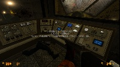
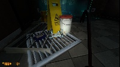
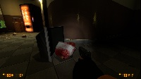
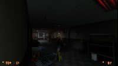
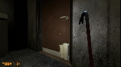
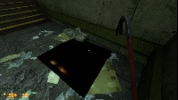
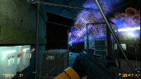
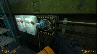
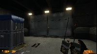
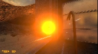

First of all, i’d like to say that i absolutely LOVE your work. Black Mesa Source was in my opinion the best experience someone could have with an FPS game. And that’s why i made this list. I wanted to make sure that people out there would get the most out of it’s final version.
MAJOR COMPLAINTS (Things that grind my gears)
- Objects, ragdolls and ragdoll gibs collision is all messed up. You can clip through certain large pickable objects and make them clip into each other. Some objects inside the wooden boxes are relatively large but can’t be picked up, they simply clip into the box’s pieces and won’t react to your shooting or explosion blasts. Most of times, ragdoll gibs can’t be picked up (which is a huge letdown since i love to throw grunt’s brains around) and won’t “bleed” when shot. Also, ragdolls and it’s gibs can clip through the playermodel and some objects and may clip through walls while falling. Ragdoll’s limbs will clip into it’s body as it is pulled up by the barnacle. Bullsquids sometimes won’t break into gibs.
-NPCs won’t respond properly to friendly fire. Scientists should run, scream and cower in corners and security guards should first give you warnings and then draw their weapons and shoot at you.
-Vortigaunt’s rays sometimes are charged but not fired.
-Each time you pick a new weapon you get to watch a animation, however, sometimes the animation simply isn’t triggered. eg.: Crowbar, magnum, shotgun and crossbow (i’m not even sure if the crossbow has one of these animation but it should, you have more than time in the diver’s cage to watch it).
-Crossbow has no running animation.
-The running animation of the throwables will take some time to be triggered and will persist after you have already stopped running.
-If you throw a C4 charge and then start running the detonator in your hand will glitch. If you blow the charge and then run again your right hand will disappear.
-You can’t interact with vending machines.
-There are some lighting errors here and there.
-There’s something wrong with the loading screen letters.
MINOR COMPLAINTS (Details are important!)
-The electric cable at the puddle in “Office Complex” creates a hole that doesn’t make any sense. See https://steamcommunity.com/sharedfiles/filedetails/?id=545759639 and https://steamcommunity.com/sharedfiles/filedetails/?id=545759586 (i suggest removing the grid)
-At the beggining of the “Power Struggle” chapter, If you’re inside a building the gargantua won’t ever stop using the flamethrowers while she still has you in her sights, even if you’re way too far for her to reach you. You’d think she would eventually get frustrated and leave.
-Sometimes the power cable you have to connect to kill the gargantua will get attached to the wrong spot in the wall.
-Thin monitors can’t be destroyed with the crowbar .
-Glock shells are not ejected.
-Billboards make metal sounds when you whack them with the crowbar in spite of the surface they were placed into.
-If you charge the tau cannon and then switch to the crowbar before firing it an odd orange light appears at the center of your screen.
-Charged tau cannon shots should turn any light NPC or ragdoll into temporarly energized gibs, however, most of times, if you fire at any NPC he will only break into regular gibs, if you fire at an alien ragdoll it will do the same thing and if you fire at a human (that not a female assassin) ragdoll it will only get energized.
SUGGESTIONS (Maybe i’m just crazy but…)
-Something should leak out of the radioactive barrels when you shoot them.
-The old BMS mechanics for the beverage machines should be applied to the snack ones.
- You should be able to break objects such as plant’s vases or computer’s CPUs (like you could in CSS).
-Security cameras should be destroyable.
-The zoom-in animation of the crossbow seems a little rushed, i remember the Far Cry 2 pistol had this same problem, maybe you guys could smooth it a bit.
-Maybe it’s just me, but the crowbar first-pick-up animation isn’t cool as the others. I suggest changing it to something like the Bioshock idle wrench animation. See https://steamcommunity.com/sharedfiles/filedetails/?id=382788334
OBSERVATION: I haven’t played the entire campaign yet but i heard people saying that some iconic lines are missing. This makes me very sad. I expected to see more dialogue, not less.










 [/size]
[/size] .
.